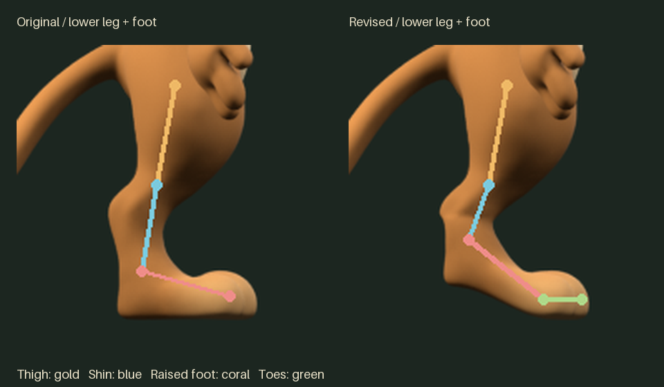
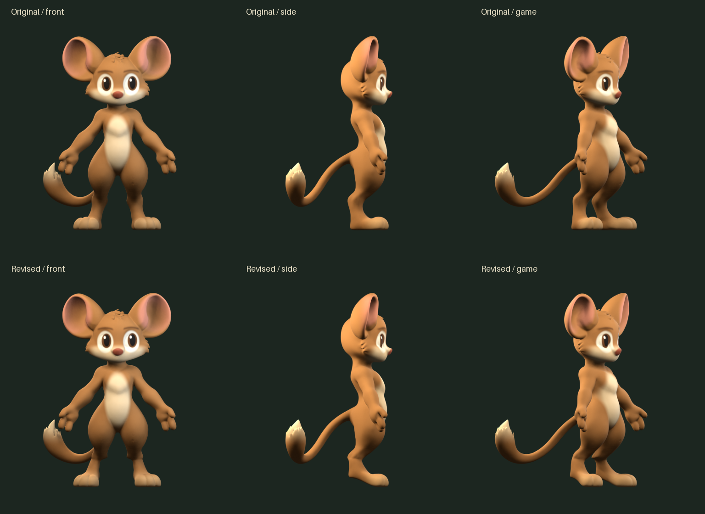
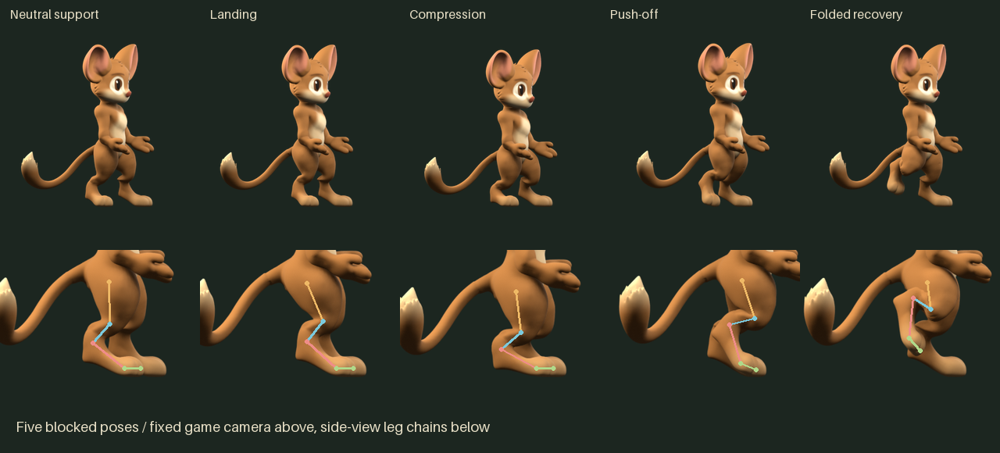

Zebes / Mouse 3D / Foot study 01
A raised heel, with toes that can flex
A small shape change and five blocked poses: neutral support, landing, compression, push-off and folded recovery. Watch the broad toe pad hold the ground while the raised foot bends above it. This motion test resets after recovery.
Full character / fixed camera
Side view / lower-leg articulationThigh · Shin · Raised foot · Toes
Original and revised foot / same side view

Original and revised character / front, side, game camera

Five blocked poses

Study awaiting visual review. The accepted master and runs 01–02 are preserved. Run 03 follows the foot study.